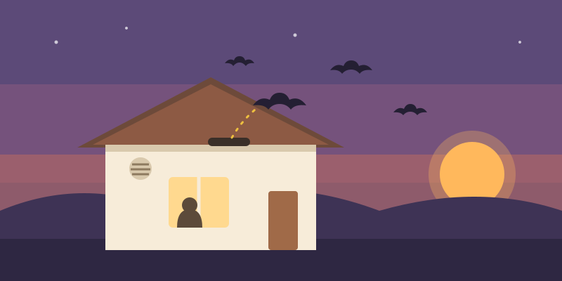
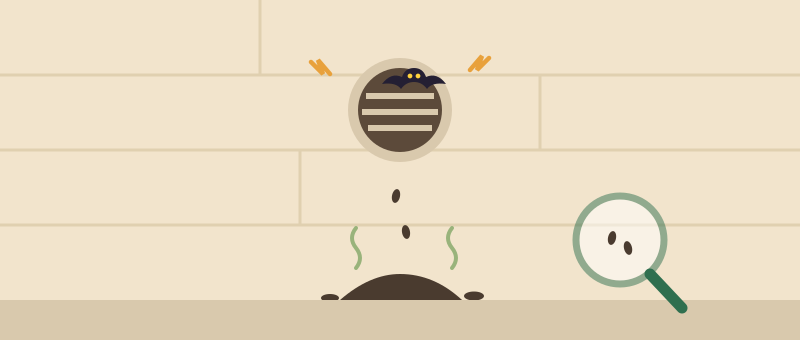
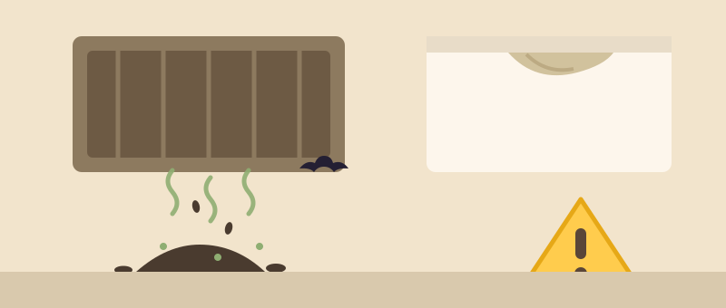
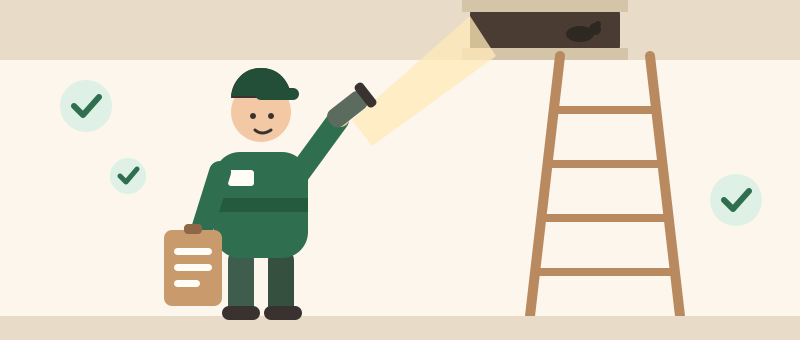
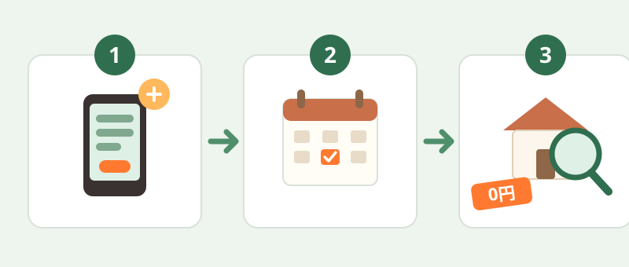

夕方、軒先から飛び立つ黒い影…それ、コウモリかもしれません

※ご案内する遷移先サービスの公式ページに基づく情報です（2026年7月時点）
無料の現地調査を申し込む※北海道・東北地方は対象外です。対応可否・費用・調査内容は遷移先ページでご確認ください。
※当ページは公式サイトではありません。

1つでも当てはまれば、コウモリが住み着いている可能性があります。
気になる項目をタップするとチェックできます

コウモリは同じ家をねぐらにする習性があり、自然にいなくなることはほとんどありません。
数が増える
夏は繁殖・子育ての時期。群れで住み着くと、糞の量も一気に増えます
糞による衛生被害
乾燥した糞が粉になって舞い、ダニ・カビ・雑菌など健康面の不安につながります
臭いの染みつき
糞尿のアンモニア臭が建材に染み込み、天井のシミの原因にもなります
対応費用の増加
糞の堆積や被害範囲が広がるほど、清掃・消毒・修繕の費用は高くなりがちです
コウモリは鳥獣保護管理法で守られており、許可なく捕獲・殺傷することは法律で禁止されています。個人でできるのは「追い出し」までです。
侵入口を塞がない限り、追い出しても同じねぐらに戻ってきてしまいます。

当ページからは、次のような特徴を持つ害獣駆除の専門サービスに相談できます。
費用がかかるのは、見積り内容に納得して契約した場合のみ。相談・調査だけでも利用できます
一級建築士事務所が運営。建物構造を熟知したスタッフが、侵入口の特定から封鎖工事まで自社で対応します
「追い出したのにまた戻ってきた」を防ぐため、保証期間中の再発は無償対応とされています
コウモリのほか、ネズミ・ハクビシン・イタチ・アライグマなどの害獣にも対応しています
※上記は遷移先サービスの公式ページに基づく情報です（2026年7月時点）。最新の内容・詳細な条件は必ず遷移先ページでご確認ください。当ページは公式サイトではありません。
コウモリ対策の費用は、次の要素によって一軒ごとに異なります。
だからこそ、まず無料の現地調査で正確な見積りを取るのが、損をしない最短ルートです。見積り内容に納得できなければ、断っても費用はかかりません。

下のボタンから進み、気になる症状を伝えます（Web・電話どちらでも可）
担当窓口から連絡が来るので、都合の良い調査日を決めます。日程まで決めておくとスムーズです
ねぐらと侵入口を確認し、見積りを提示。納得できたら作業に進めます
調査・見積り後に断っても費用はかかりません。
遷移先サービスでは、現地調査・見積り・出張費は0円とされています。費用が発生するのは見積りに納得して契約した場合のみです。詳細は遷移先ページでご確認ください。
コウモリは鳥獣保護管理法の対象のため、許可なく捕獲・殺傷することはできません。個人でできるのは追い出しと予防までで、確実な再発防止には侵入口の調査と封鎖が必要です。
問題ありません。見積り内容を確認してから判断できます。その場で契約を強要されることはないとされています。
賃貸物件のオーナー様からのご相談も可能とされています。入居者の方は、まず管理会社・大家さんへの連絡もあわせてご検討ください。
北海道・東北地方は対応対象外です。その他の地域についても、対応可否は遷移先ページで必ずご確認ください。
群れが住み着いて糞が増える前の相談が、結果的にいちばん安く済みます。
調査・見積りは0円。まずはねぐらの場所を確かめてみませんか？
※北海道・東北地方は対象外です。対応可否・費用・調査内容は遷移先ページでご確認ください。